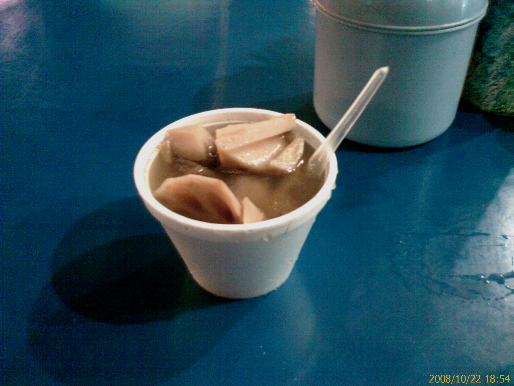
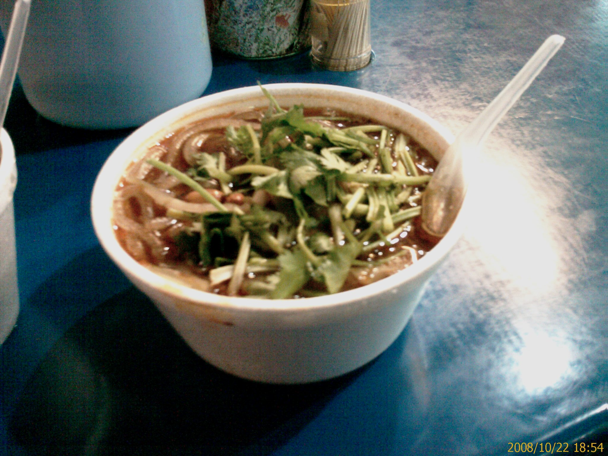
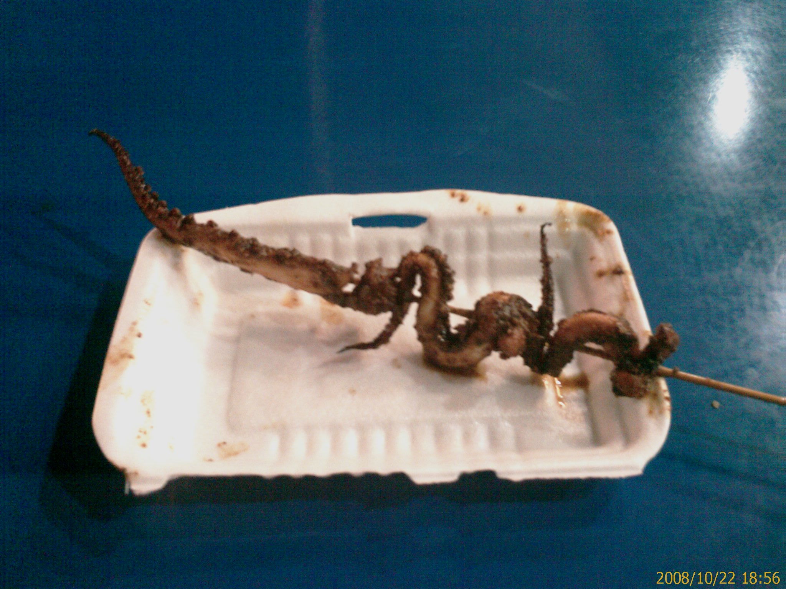

園中園的晚餐
22/Oct 2008
以前到大陸來玩的時候都會想要寫個遊記來留念
怎麼來到大陸工作反而沒有寫些東西哩…XD
所以….
現在開始吧!!
今天晚上到華潤萬家的園中園找吃的
不知不覺就走到上次同事帶我去吃麻醬麵的地方
不過我不想去同一家吃
就吃它旁邊的
我點了三個東西

蓮藕排骨湯 3 元
料多 - 滿滿的蓮藕，排骨只有一小塊
味道還算可以

酸辣麵(微辣) 5 元
點菜的時候就有點猶豫要不要辣了
因為上次在隔壁吃微辣的麻醬麵只吃了一半就辣到受不了
不過吃酸辣麵不加辣感覺就好像是點珍珠奶茶不加奶茶一樣
所以我還是點了微辣的
吃的時候有點後悔了
真是有夠辣的
只能靠一小碗的蓮藕排骨湯來調合一下
後來只能一條一條慢慢夾起來吃
所以這一小碗的麵我大概吃了快一個小時吧…Orz

魷魚絲 3 元
我本來期待的是像乾貨的那種魷魚絲
不過竟然是烤魷魚…XD
這個也是辣到不行
把我的味覺完全痲痺了
除了知道辣之外
沒什麼其他的味道了